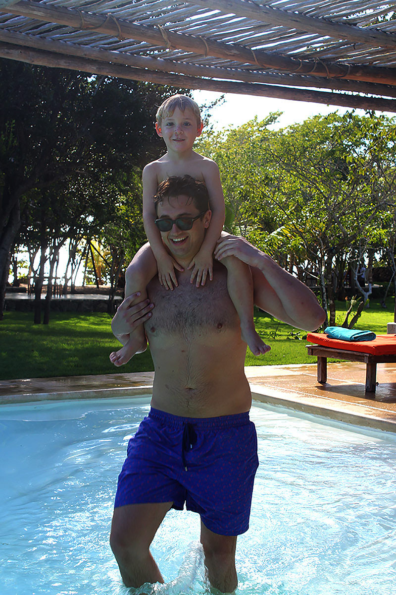
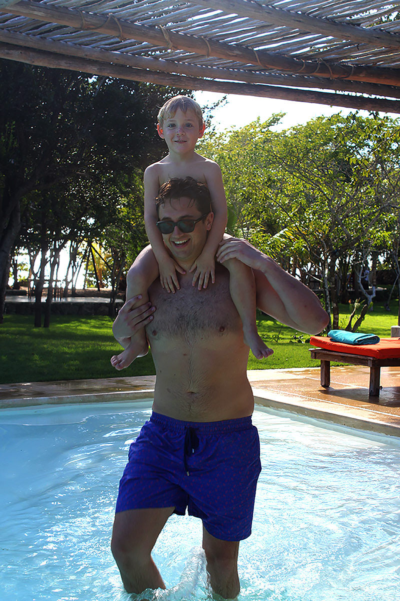

These are some of the photos I have taken throughout Journalism Design Toolkit Spring 2020. Now that we are in online classes, I miss being able to take photos of my favorite city: New York City. These will provide memories of some of my favorote places around the New School campus.
<3
What I did for the assignment:
-----------
1. On a nice day in the city, I set out to Union Square Park and shot some photographs for about 15 minutes.
2. After coming back with many options, I chose which images seemed to fit the best to the assignment, and put them into Adobe Photoshop to play around with.
3. I edited each of the six images into their correct forms according to the assignment, and I had fun with practicing Photoshop while doing it.